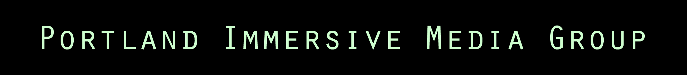

		<a-scene vr-mode-ui="enabled: true">
	          <a-assets>
	            <video id="vid" src="vids/templ5-360.mp4" autoplay loop crossorigin></video>
	            
	            
	          </a-assets>
	          
	          <a-image src="#PIMG-title" width="10" position="0 3.7 -7.32" rotation="" scale="1 2 1"></a-image>
	          <!-- <a-image src="#PIMG-logo" width="12" position="0 3 -6.72" rotation="" scale="1 1.5 1"></a-image> -->
	          
	          <!-- Link to Neko -->
	          <a-entity id="link-box" position="0 100 -420" scale="10 10 10" rotate="0 0 0" 	geometry="box" material="opacity: 0.5" href="/neko.html">
              	<a-animation attribute="rotation"
                       dur="10000"
                       fill="forwards"
                       to="0 360 0"
                       repeat="indefinite"></a-animation>
              </a-entity>

	            <a-entity position="0 0.75 0" camera look-controls wasd-controls>
	              <a-cursor material="color: yellow; shader: flat"></a-cursor>
	            </a-entity>
	          
	          <a-videosphere src="#vid" rotation="0 -90 1"></a-videosphere>
	    </a-scene>